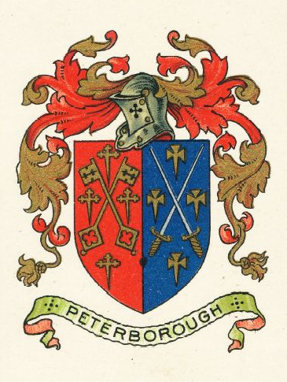
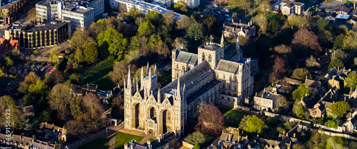

Visit Peterborough!
Peterborough is a beautiful cathedral city in the north of Cambridgeshire, steeped in history, exquisite culture, and fantastic shopping.
This website was created to give you a taste of the abundant experiences that await the visitor, designed as a project for University Centre Peterborough.
A Potted History of Peterborough:
Peterborough has been occupied constantly since the Bronze Age, remains of the Iron Age settlement can be still be seen today.
The major Roman fort of Durobrivae is just five miles west on the famous Ermine Street, dating back to the Iron Age.
Sexwulf was granted lands here before AD 655 to build a great monastery, no commonplace structure, but a Second Rome
as Candidus wrote, in what was then Medeshamstede in the Anglo-Saxon kingdon of Mercia.
Hereward the Wake harried the Norman invaders throughout the Fens in the 11th century, and famously attacked Peterborough's Abbey where William the Conqueror had stationed Norman knights.
The monastery had been razed by Vikings and the monks slaughtered, but in AD 1238 Peterborough Cathedral was built on the foundations of Sexwulf's monastery, giving rise to the motto Upon This Rock
which appears in Peterborough's coat of arms.
Peterborough Cathedral played a significant part in the rebellion against King John, in Tudor history as the final resting place of Katherine of Aragon and the original burial place of Mary Queen of Scots (both buried by the celebrated Old Scarlett
, a character who may have actually been the blueprint for William Shakespeare's gravedigger in Hamlet), and in the English Civil War when Royalists tried to resist Cromwell's troops who caused immense damage, and King Charles 1 was briefly imprisoned in the cathedral precincts.
Just to the North is the region known as South Holland, named for the hundreds of windmills that lined the banks of the River Welland in the 19th Century and the tulip growing and festivals in the area. Moulton windmill, 30 minutes away by car, is the largest windmill in the UK.
Whilst air raids devastated Britain during the Second World War, Peterborough got off relatively lightly, but in the worst night of the Blitz, 10th May 1941, the Priestage area was bombed heavily.
Peterborough Today:
Peterborough is an educational centre of excellence boasting two universities in the city centre, fascinating museums, numerous historic buildings, and ongoing archaeological digs across the region which often welcome visitors.
The centre of Peterborough is fairly compact, so it's easy to enjoy historical and cultural tours, enticing city-centre shopping, a wide-range of quality eateries and a vibrant night life all without having to get behind the wheel, making it a great place for a stopover or a base for wider exploration.
Theatres and cinemas abound, and you can try your hand at any number of sporting pursuits: axe throwing, skydiving, archery, sailing and gliding to name a few, in the city or within very easy reach.
Peterborough is well served by transport links by road (the A1), rail, and air (Luton and Stansted are both about an hour away), making it a convenient hub for cultural tours of the East of England, the stunningly beautiful Norfolk coastline, London and the south east, or a convenient stopover en route to mainland Europe.
The weather is typically British (alas!), but is marked by lower rainfall than average, and a generally sunnier climate, and the largely flat landscape makes for huge, stunning skyscapes with frequent rainbows, and the extraordinary range of wildlife makes it a photographer's dream.
So Come and See Us!
Anything you want to do, you'll find it here, so make the time to visit us and experience Peterborough's legendary warm welcome for yourself?
Peterborough: it's probably not as bad as you've heard! 😉
Social Media: